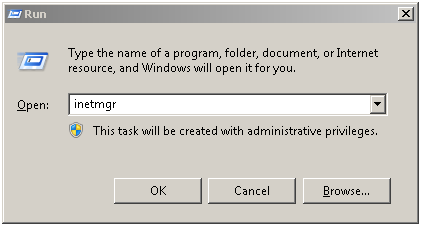
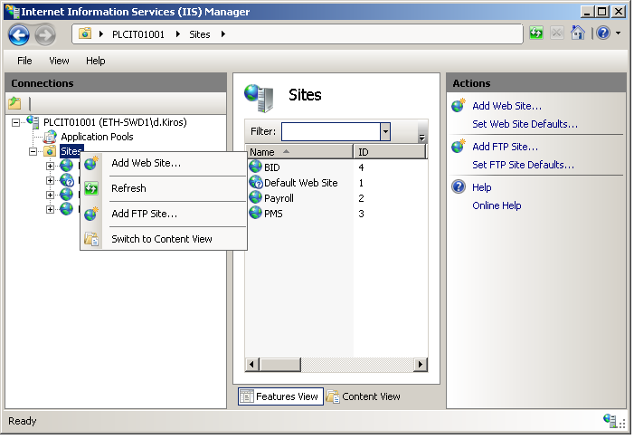
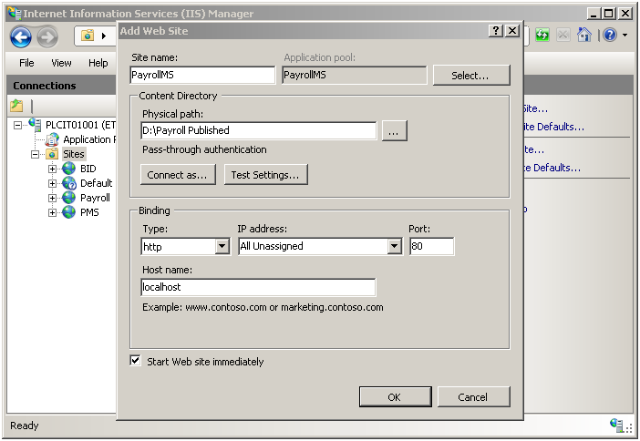
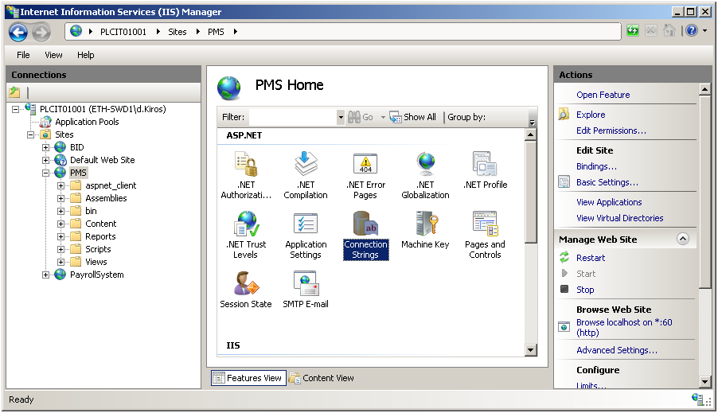
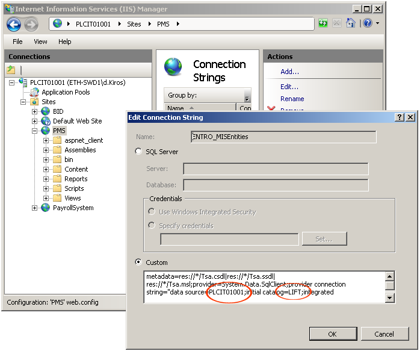

Deploying the system on IIS
Once you install the IIS, the next step is to deploy the Payroll Management System on it. Follow these steps to configure your IIS and launch the application.
Steps
Type 'inetmgr' in run

The IIS Manager window will be opened. Now, right click on the sites link from the left panel of trees and click on Add Web Sites as follows

After you click on the 'Add Web Site' menu , a new pop up window will appear on the screen. This window will let you configure the web site information, a site, that is going to be deployed on IIS. Give a meaningful name to the Site Name field E.g. 'PayrollSystem'. Enter the physical path to the system (path to EasyPay software which you get from your software vendor). If the default port number (80) is not assigned to another web site, you can use that, otherwise you have to provide a different port number. Again give a meaningful name to the Host Name field (this is the address which you would be typing along with the port number on web browsers to access the system). Then click on OK and close the dialog box.

Configuring database connection string
The following is a step by step guide on how to set up the connection string with IIS manager.
Steps
Open IIS manager and connect to your site as described above -> Click on the web site that you have created (PayrollSystem) -> then double click the Connection Strings icon as follows

Double click to open each connection string file

Change the data source to the SQL Server instance name that you used while installing SQL Server. And change the initial catalog to the database name of the system. then click on okay and exit the dialog box.
That's it! your connection string has been configured.